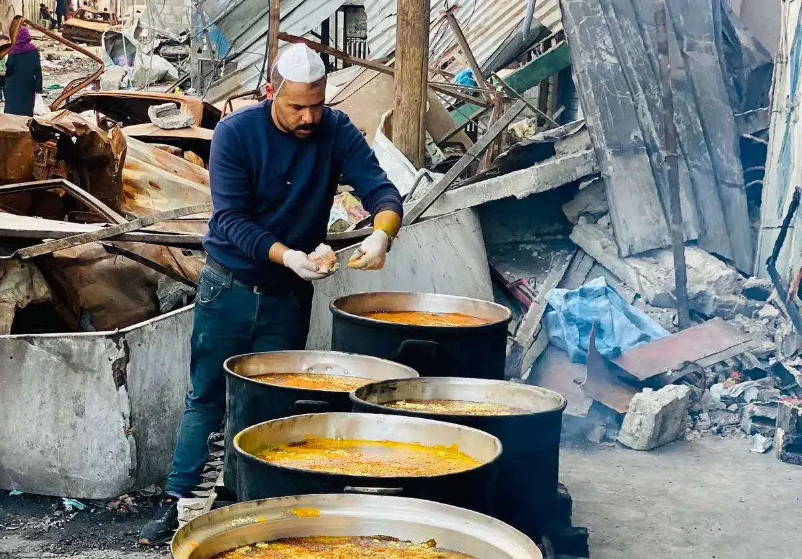
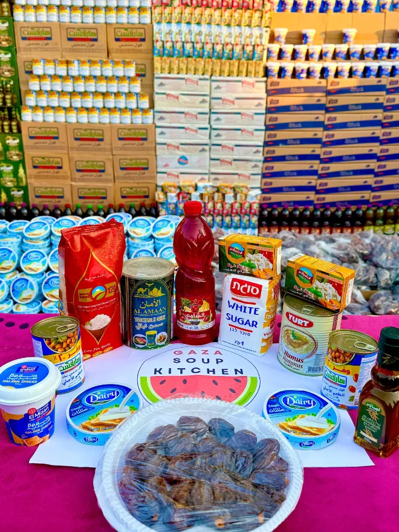
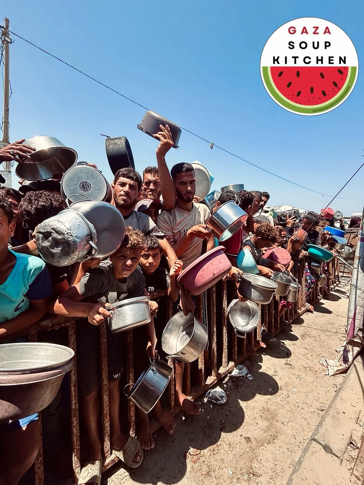
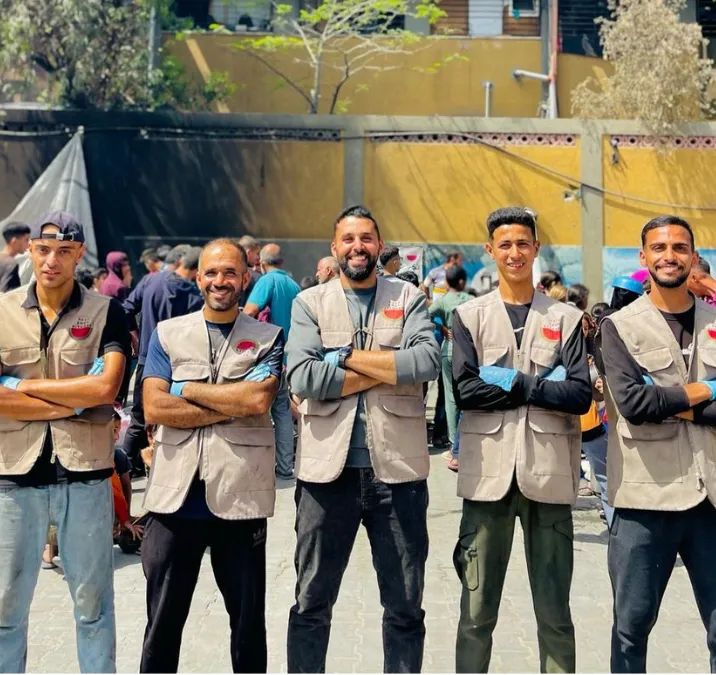

From the kitchenOpen reel ↗
GAZA SOUP KITCHEN · THE WORK CONTINUES

We are not an outside aid group; we are the people of Gaza, serving our own community.
One-time · $50 selected
Continue to official donation pagePreview only. No payment or personal information is collected here.
VOICES FROM GAZA
Videos from GSK. The cover photos are authentic GSK images; the video opens when played.

02 / IMPACT & THE WORK
ONE LIFE AT A TIME.
The initiative began in Beit Lahia in early 2024. Amid scarcity and risk, the team prepares hot meals with what is available. GSK describes itself as people of Gaza serving their own community, sustained by grassroots support.
Source snapshot: GSK official website ↗, checked 19 October 2026. Operating totals require GSK confirmation before final publication.
03 / SELECTED COVERAGE
Eight linked stories from outlets featured on GSK’s current website.
04 / TEAM & LEGACY
Hani and Mahmoud Almadhoun founded Gaza Soup Kitchen in early 2024 in Beit Lahia, Gaza, to feed their neighbours.
Mahmoud was killed in November 2024. His word, Mostamreen, remains the kitchen’s guiding principle.
Read Mahmoud’s 2024 op-ed ↗Staff and volunteers in Gaza prepare and share meals for their own community.
GSK is led by people rooted in the community it serves.

THE WORK IS HERE. THE PEOPLE ARE HERE.05 / DIGITAL COMMUNITY
An online space is being prepared for supporters to follow trusted updates, exchange resources and find ways to help from wherever they are. Membership and schedules are still being worked out.
Ask about the community ↗
MOSTAMREEN · WE WILL CONTINUE
Support the people of Gaza serving their own community.
Donate on GSK’s official site ↗